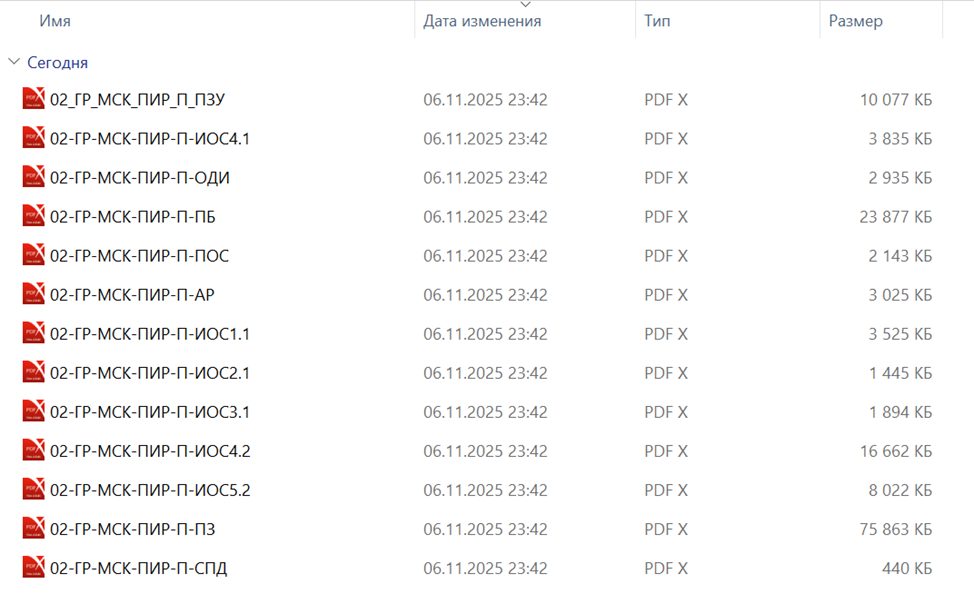
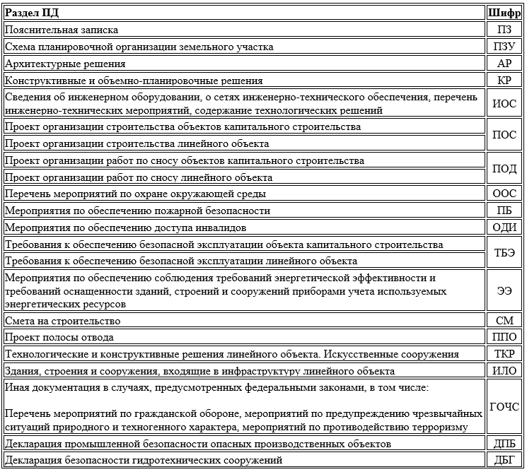
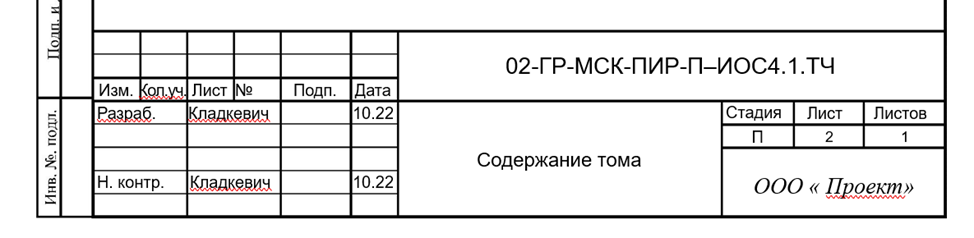

Как читать Текстовую часть проектной документации и не потеряться в шифрах

Вы открываете папку с проектом.
Перед Вами – сотни файлов:

Вы в панике:
– Где тут что?
– С чего начать?
– Это вообще по-человечески можно прочитать?
Ответ: да. И сегодня Вы этому научитесь.
В любом разделе проектной документации есть текстовая и графическая части. В этом уроке разберемся как составить текстовую часть.
Ранее я упоминала о ГОСТ Р 21.101-2020, как раз сейчас он нам пригодится для составления текстовой части проектной документации.
Каждому разделу проектной документации присваивают обозначение, в состав которого включают базовое обозначение, устанавливаемое по действующей в проектной организации системе, и через дефис - шифр раздела проектной документации. Наименование шифров привели в таблице.

При необходимости разделы и подразделы делят на части, а части - на книги. Каждую часть и книгу комплектуют отдельно.
Пример
Раздел ИОС включает все инженерные системы, каждую из них выделяют в отдельный комплект. Так ИОС1 – Система электроснабжения, ИОС2 – Система водоснабжения, ИОС3 – система водоотведения, ИОС4 – Отопление, вентиляция и кондиционирование воздуха, тепловые сети, ИОС5 – Сети связи, ИОС6 – Система газоснабжения.
Если Комплект ИОС4 Вы хотите разделить на отдельные книги – подразделы, то через точку добавляют номер книги. Так книга будет называться ИОС4.1 – Отопление.
Обозначения документов указывают на титульных листах и/или в основных надписях документов, а также в колонтитулах на листах текстовых документов, выполняемых без основных надписей. Пример, смотрите на картинке.

Также оформление основной надписи и титульного листа приведены в приложении к ГОСТу.
В текстовых документах, содержащих в основном сплошной текст (в том числе текстовые части разделов и подразделов проектной документации), выполняют по ГОСТ Р 2.105-2019 с учетом положений ГОСТ Р 21.101-2020 настоящего стандарта на листах формата A4 по ГОСТ 2.301-68, а содержащиеся в них таблицы и иллюстрации допускается выполнять на листах других форматов.
Рассмотрим основные принципы оформления текстовой части. Чтобы она выглядела профессионально, обратите внимание на следующие нюансы:
- Размер шрифта – 12-14, Times New Roman или Arial.
- Абзацы должны начинаться с красной строки.
- Используйте нумерованный и маркированный списки для упорядочивания информации.
- Для выделения важного текста применяйте жирный шрифт или подчеркивание.
- Строго соблюдайте поля страниц (левое – 3 см, правое – 1,5 см, верхнее и нижнее – 2 см)
Ниже смотрите советы по разработке текстовой части ПД:
- Максимальная ясность и однозначность: старайтесь избегать двусмысленных формулировок и расплывчатых выражений.
- Использование единого стиля: применяйте единый официальный стиль изложения, исключая синонимы и жаргон.
- Графические материалы: делайте рисунки и схемы простыми и понятными, а также четкими.
- Актуальность нормативной базы: постоянно сверяйтесь с последними изменениями нормативных документов.